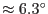
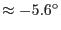

The XMM Optical Monitor can produce data in two modes: Imaging and Fast (timing). The omgchain package reduces the OM Imaging mode data taken with either the UV or Optical grism filters (prism filters with diffraction gratings on the back which facilitate low-resolution spectroscopy). There are two filter positions of the filter wheel in front of the OM detector which are occupied by grisms (hereafter called grism-filters), one designed for the UV spectral range and another for the visual. Thus, in the OM Imaging mode one can obtain spectra of all the sources within the OM science window in two different spectral bands. The grism-filters are labelled as following (for instance, in the file headers):
The grisms disperse the incoming photons with the dispersion angle depending on the photon energy. The resulting images contain two (rarely -three) spectral orders. The zero-order spectra can be considered as point-like - they are used as reference points for the determination of wavelengths in the corresponding first-order spectra.
The specific design of the OM filter wheel and grism optical systems caused the spectral images to be rotated with respect to the pixel grid of the OM CCD detector by  (anticlockwise) for the UV grism and  (clockwise) for the visual-grism.